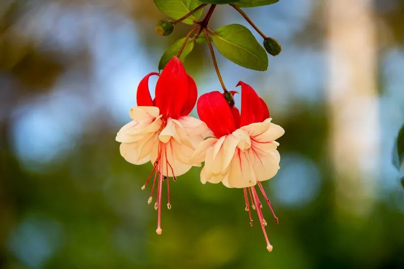

花卉与草本 · 植物界
倒挂金钟 Fuchsia hybrida

柳叶菜科常绿灌木，花朵下垂、花萼与花瓣双色如悬挂的灯笼，花期长，是阳台与庭院吊篮的经典花卉。
- 分类
- 门被子植物门纲木兰纲目桃金娘目科柳叶菜科属倒挂金钟属
- 栖息环境
- 中南美洲山地林缘，喜凉爽、湿润、半阴、通风
- 地理分布
- 园艺杂交品种，原种产中南美洲，世界各地广泛盆栽
- 保护级别
- 暂无评估
物种志
倒挂金钟为柳叶菜科倒挂金钟属常绿灌木，园艺品种多为杂交种，株高 30–100 厘米，枝细长下垂。叶片对生，卵形，边缘有锯齿。花单生叶腋，下垂，花萼管状、常呈红或紫红色，花瓣 4 枚、颜色与花萼不同，形似悬挂的小灯笼，花期 4–10 月；果实为浆果。
倒挂金钟原产中南美洲的山地，园艺杂交品种亲本多来自墨西哥、秘鲁等地，喜凉爽、湿润、半阴和通风良好的环境，耐寒性较弱，夏季高温时生长停滞。它花形奇特、花色明快，成串下垂如小灯笼，是阳台、吊篮和庭院悬挂栽培的经典花卉。栽培以疏松透气的土壤为主，夏季需遮阴降温、控水，否则容易落叶甚至枯死。
形态与习性
- 株高30–100 厘米，枝细长下垂
- 花期4–10 月，单株花期长
- 果期花后结浆果
- 光照喜半阴散射光，忌强光
- 水分喜湿润，忌积水
- 土壤疏松透气、富含腐殖质的壤土
- 繁殖扦插繁殖
- 主要用途阳台吊篮、庭院悬挂、盆栽
趣味知识
- 倒挂金钟的花萼与花瓣颜色不同，整朵花下垂如小灯笼。
- 它原产中南美洲山地，怕热不怕冷凉，夏季高温时生长停滞。
- 倒挂金钟成串垂挂，是阳台和吊篮的经典花卉。
- 夏季需遮阴降温、控水，否则容易落叶枯死。